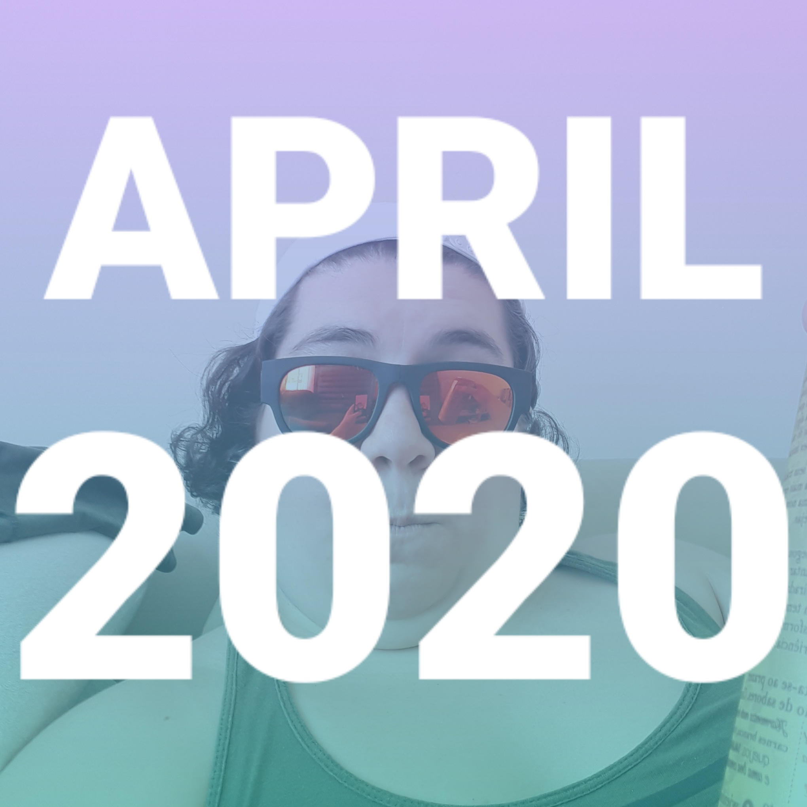

Main Page | All Blogs
-----------------------------
Posted on May 1, 2020
My Personal Playlist: The Hits of April 2020

Listen on Spotify
I absolutely love to make playlists! Back in the day, I used to make cassette mixtapes; remember those?!
Here are the tracks that followed me through this month. Enjoy!
- Over Yet - Hayley Williams
- Rescue Me - The Wind and The Waves
- Desire - 18 Carat Affair
- Cool - Dua Lipa
- Black Qualls - Thundercat
- Romanticist - Yves Tumor
- Dance Of The Clairvoyants - Pearl Jam
- Direct Sunlight - TOPS
- My Friend - Hayley Williams
- Song For Our Daugther - Laura Marling
- quiet motions - mxmtoon
- Pretty Lady - Trash Sultana
- Lead Me - CeeLo Green
- Level of Concern - Twenty One Pilots
- Brooklyn Bridge To Chorus - The Strokes
- Why We Ever - Hayley Williams
- Cold Beer Calling My Name - Jameson Rodgers
- Lifeporn - Ego Kill Talent
- I'm Gone - Dolly Parton
- Good In Bed - Dua Lipa
- Witching Hour - TOPS
- Blinding Lights - The Weeknd
- Better - Jack Garratt
- If You're Too Shy (Let Me Know) - The 1975
-----------------------------
Main Page | All Blogs